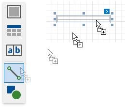

Draw Lines
The Line control draws a line in a specified direction, style, width, and color. You can use it to decorate and visually separate a report's sections.
To add a line to a report, drag the Line item from the Toolbox onto the report's area.

The actions list of the line's smart tag provides the main control properties:
Line Direction
Enables you to draw a line horizontally, vertically, and across the rectangle the line occupies from one corner to another (Horizontal, Vertical, Slant and Back Slant types).

Line Style
You can select the solid (by default), dashed, dotted, or mixed line style.
Line Width
Specifies the line width in pixels as a floating point value.
Anchor Vertically
Specifies the vertical anchoring style, so that after page rendering a control stays attached to the top control, bottom control, or both.
Note
The Line control cannot span several bands. See Draw Cross-Band Lines and Boxes to learn about drawing lines through several bands.